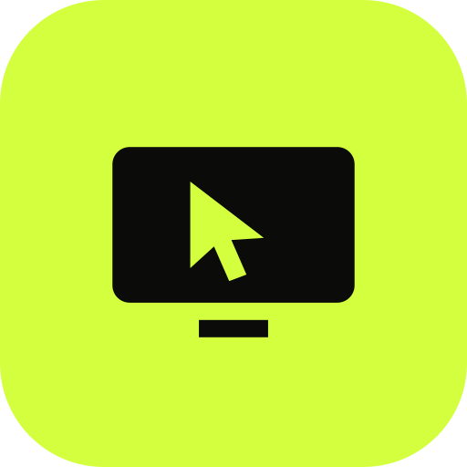

TRY IT · TRACKPAD
Feel the pad.
Move over it. Click it. This is how the real one glows and ripples.
TAP CLICK · 2 FINGERS SCROLL · 3 FINGERS SWITCH

GlidrTwo apps · One launch
Glidr turns your Android phone into a trackpad, keyboard and remote over Bluetooth. Glidr Screen puts your entire Windows PC on your phone, from anywhere you have internet.
ANDROID 10+ · WINDOWS 10 / 11 · NO ACCOUNT
01 · GLIDR
Glidr uses the Bluetooth HID profile your phone already has, so the PC sees an ordinary mouse and keyboard. Pair once. No software on the PC.
02 · THE CATCH
Ten metres, give or take. And you can only control, never see.
03 · GLIDR SCREEN
Live video of your Windows desktop, 24 frames a second, with a trackpad, keyboard and shortcuts on top. It goes straight from the PC to your phone. There is no media server in the middle.
04 · SEE
Pinch to zoom, drag to pan, tap once to reset. Turn the phone sideways for a full-screen picture. Pick Auto, 540p, 720p or 1440p, always at 24 fps.
24 fps1440p maxPing and path on screen
05 · CONTROL
Laptop-style gestures on a trackpad under the picture. Or switch on Direct touch and tap the picture to click that exact spot, like a touchscreen.
Tap · click2-finger tap · right clickTap and dragNatural scrolling
06 · MONITORS
Numbered chips on the picture jump straight to a monitor. The Displays sheet draws every screen in its real layout with live previews.
07 · EVERYTHING ELSE
TRY IT · TRACKPAD
Move over it. Click it. This is how the real one glows and ripples.
SHORTCUTS
ANY LANGUAGE
Sent as Unicode text, so it is not limited by the PC's keyboard layout.
MONITORS
VIEWING DISPLAY 1 · 1920 × 1080
LIVE
24 FPS · 14 MS · DIRECT
MAKE IT YOURS
The same palette runs through both apps and this page. Try it, the whole page changes.
08 · SET UP
The phone app on Android. The tray app on your Windows PC.
On the PC choose Pair a new phone. On the phone tap Scan QR, or type the code.
Pick the PC and tap Connect. Same Wi-Fi or any other network, and it reconnects by itself.
09 · PRIVACY
Video, mouse and keyboard go phone to PC over WebRTC. No media server, no relay of ours.
The pairing key never leaves your two devices. The rendezvous server only passes three sealed setup messages.
Rendezvous defaults to ntfy.sh. Point both apps at your own ntfy server for full control.
10 · GOOD TO KNOW
No. Glidr works alone over Bluetooth, with nothing to install on the PC. Glidr Screen is separate: it needs its phone app and the Windows tray app, and shows your PC on your phone.
Glidr Screen is built to connect from any network. Peer to peer can fail when both sides are behind symmetric NAT, which some mobile carriers use. IPv6 normally avoids it, and you can add your own TURN server in the PC settings, at the price of relayed media.
The PC apps are not code-signed yet, so Windows warns on first run. You can read and build everything from the source on GitHub.
Windows blocks capture and input for the lock screen, UAC prompts and elevated windows unless the PC app runs as administrator.
Yes. Turn off Allow remote control in the PC app and the phone shows a "View only" tag. A separate Sharing switch pauses all connections.
11 · GET BOTH
Glidr and Glidr Screen. Your phone is the mouse. Your PC, anywhere.
Bluetooth mouse, keyboard, media remote and voice. Android 10 or newer.
Phone app · .apk PC companion · .exe (optional) All releases →Your Windows PC live on your phone, with a trackpad on top. Phone app plus Windows tray app.
Phone app · .apk PC app · Windows View on GitHub →